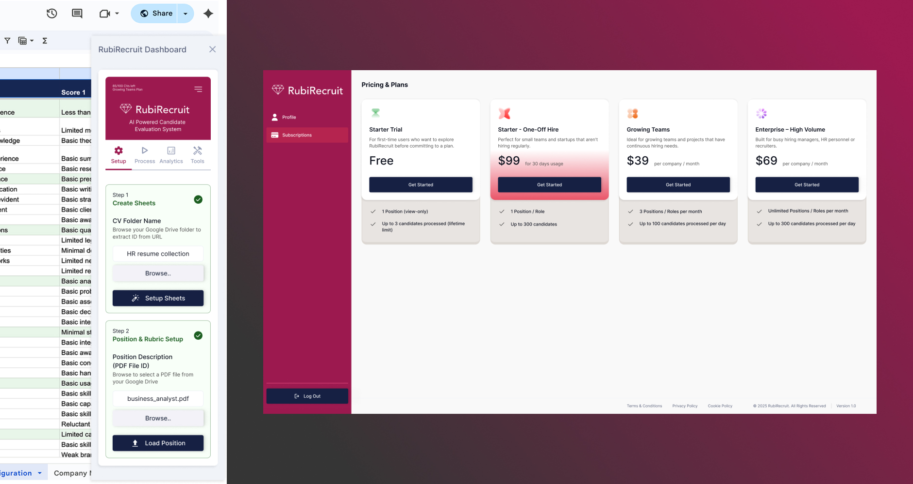
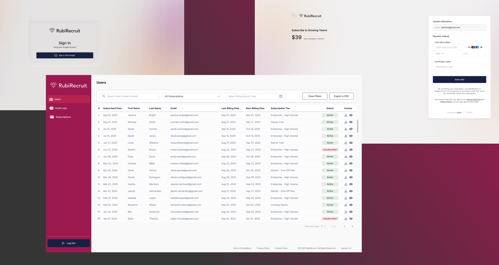

AI-Powered Candidate Evaluation System
RubiRecruit is an AI-powered recruitment evaluation system designed to streamline hiring tasks for recruiters and offer a seamless application experience for candidates. This project includes the UX/UI design of a Chrome extension workflow, along with newly designed Admin and User portals. My focus was to create a structured, intuitive process that helps recruiters evaluate candidates faster, with clear navigation, simplified steps, and a scalable design system.

Project Intro
RubiRecruit is an AI-driven Candidate Evaluation System created to optimize and modernize the hiring process for recruitment teams. The project involves the design of three interconnected experiences: a Chrome extension that guides recruiters through step-based evaluation workflows, a newly built Admin Portal for managing users, audit logs, and subscriptions, and a User Portal designed for candidates to manage their profiles and subscription details.
The primary users of the platform are recruiters who need a structured, efficient way to process candidate data, and candidates who require a simple interface to manage their personal information. My role was to design clear, task-oriented flows within the Chrome extension, craft responsive and scalable portal interfaces, and ensure consistency across all touchpoints through reusable components and a modern visual system.
The final solution provides a seamless recruitment experience - improving clarity, reducing manual effort, and enhancing the speed and quality of candidate evaluation. The design prioritizes usability, transparency, and workflow efficiency, enabling recruitment teams to make more informed decisions through an intuitive and well-organized system.
The Challenge
Designing an AI-powered recruitment solution required quickly understanding complex recruiter workflows, candidate evaluation processes, and subscription-based user management. The existing Chrome extension had limited functionality, unclear user flows, and usability issues, requiring a complete UX overhaul. Additionally, the Admin and User Portals were entirely new concepts, demanding the definition of features, user journeys, and workflows from scratch. Ensuring a seamless experience across all three platforms while establishing a scalable design system was a key challenge.
My Role & Responsibility
As the UI/UX Designer, I was responsible for the entire end-to-end design process, including:
Conducting research to understand recruiter requirements, candidate flows, and system expectations
Mapping user journeys and step-based workflows for the Chrome add-on
Creating information architecture for the Admin and User Portals
Designing wireframes, prototypes, and high-fidelity UI for all modules
Building reusable components and setting up a unified design system
Preparing visual guidelines, layout rules, and interaction patterns
Receiving feedback through UX & development team reviews, refining designs based on technical feasibility
The project's design direction, component library, and final interfaces were all created by me, with stakeholder input helping refine decisions.
UX Process
The Solution
The final solution brings together three interconnected digital experiences - a Chrome Add-On, an Admin Portal, and a User Portal - designed to streamline recruitment workflows and make candidate evaluation more efficient and intuitive.

Design Highlights
Step-Based Structured Workflow
Clean, guided steps inside the Chrome add-on make complex evaluation tasks feel simple and linear.
Clear Role-Based Navigation
Admin Portal: Users, Subscriptions, Audit Logs | User Portal: Profile, Subscription Management
Unified Visual System
Consistent components, spacing, typography, and colors across all platforms.
Efficient Layouts
Screens designed for focus, reducing clutter and decision fatigue.
Scalable UI Components
Ensures quick future enhancements and easy development handoff.
Responsive & Accessible Design
Readable layouts, balanced spacing, and accessible color contrasts.
Outcome & Impact
Learnings
-
Designing for AI-driven products requires balancing automation clarity with user trust - every AI action needs a legible rationale in the UI
-
Stepped workflows (like the Chrome add-on) demand meticulous edge-case thinking: empty states, error flows, and partial completions are as critical as the happy path
-
Building a design system from scratch taught me the value of decision documentation - naming conventions, token structures, and usage rules prevent costly inconsistencies later
-
Working with complex admin portals revealed the importance of progressive disclosure: exposing advanced features only when relevant reduces cognitive overload
-
Frequent developer syncs early in the process saved significant rework - technical constraints are design constraints and should be surfaced in ideation, not handoff